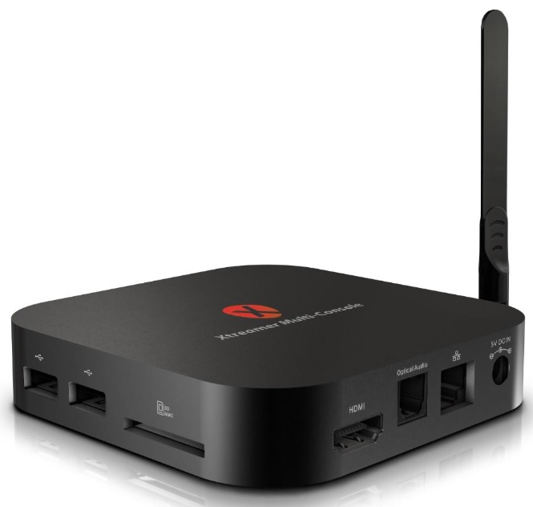

Xtreamer Multi-Console
Jump to navigation
Jump to search
|  | |
| Manufacturer | Xtreamer |
|---|---|
| Name | Multi-Console |
| Codename | xtreamer-mc |
| Released | 2014 |
| Category | testing |
| Original software | Android 4.2.2 on Linux 3.0.36 |
| Hardware | |
| Chipset | Rockchip RK3188 |
| CPU | 4x 1.6 GHz Cortex-A9 |
| GPU | Mali-400 MP4 |
| Display | HDMI |
| Storage | 16 GB NAND Flash |
| Memory | 2 GB DDR3 |
| Architecture | armv7 |
{kind=link}
This device is marked as not booting.
| USB Networking | |
|---|---|
| Flashing | |
| Touchscreen |
Unavailable
|
| Display | |
| WiFi | |
| FDE | |
| Mainline | |
| Battery | |
| 3D Acceleration | |
| Audio | |
| Bluetooth | |
| Camera |
Unavailable
|
| GPS |
Unavailable
|
| Mobile data |
Unavailable
|
| SMS |
Unavailable
|
| Calls |
Unavailable
|
| USB OTG | |
| NFC |
Unavailable
|
| Accelerometer |
Unavailable
|
|---|---|
| Magnetometer | |
| Ambient Light | |
| Proximity | |
| Hall Effect | |
| Barometer | |
| Power Sensor | |
| Camera Flash | |
|---|---|
| Keyboard | |
| Touchpad | |
| USB-A | |
| HDMI/DP | |
| Ir TX | |
| Ir RX | |
| Stylus | |
| Haptics | |
| Ethernet | |
| FOSS bootloader | |
Contributors
Maintainer(s)
Users owning this device
How to enter flash mode
Downstream notes
There is a pre-built Ubuntu 12.04 image based on the 3.0.36+ kernel available on cnx-software.com. Although it says it is built for the MINIX NEO X7 (also RK3188-based), it seems to work on this device as well.
Mainline
RK3188 is supported in mainline, so it may not be that difficult to mainline the device. There are also have prebuilt Armbian images with mainline kernel and many dtb files
UART location
A very similar device, the MINIX NEO X7 has UART pads here. This device also has similar pads in a similar location. If these pads really are UART requires further investigation.
Installation
Similar devices
- MINIX NEO X7 Mini - It seems to be basically the same device. The only difference on the PCB that I could find were different flash and RAM chips. Instead of an external antenna, it has an integrated one. Disassembly, PCB shots.
- MINIX NEO X7 - Basically a larger version of the same device, has different Wi-Fi, more USB ports, 3.5mm jacks and a power button. Disassembly, PCB shots.
- MK809-III Quad Core Android 4.2.2 MINI PC - Same thing. But in "stick" casing and without internal Ethernet